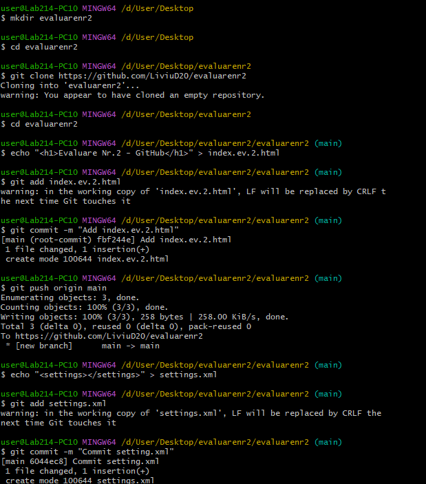
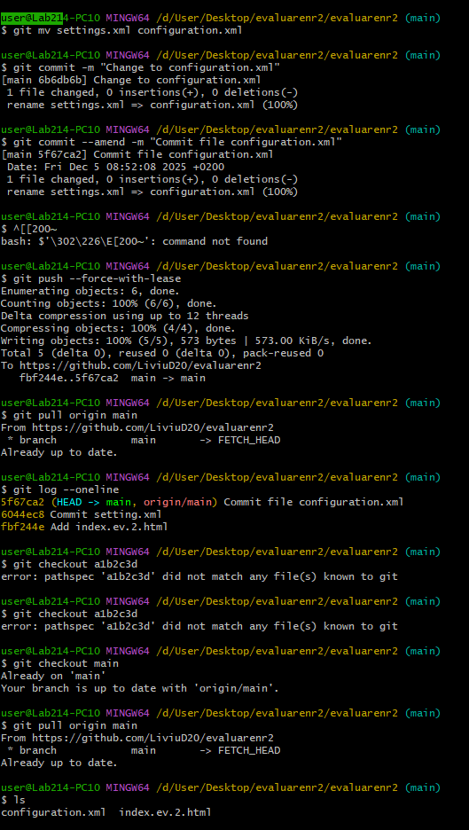
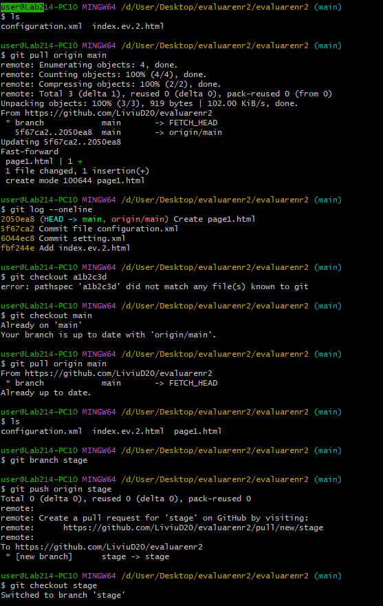
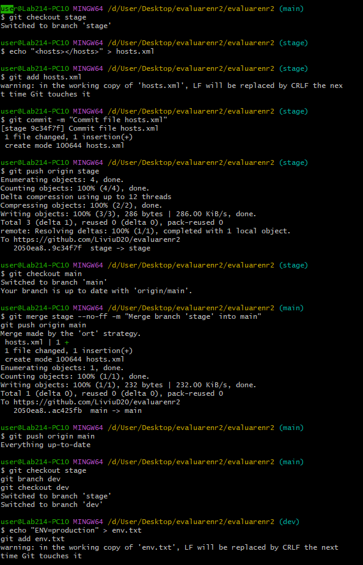

Evaluare Nr. 2 - Git & GitHub
Realizat de: Doina Liviu | Grupa: AAW-2241
Pas 1 – Crearea repository-ului și adăugarea index.ev.2.html(Commit)
git clone + crearea și commit-ul inițial al fișierului index.ev.2.html

Pas 2 – Commit settings.xml → configuration.xml + amend
Commit file settings.xml → redenumire → amend la "Commit file configuration.xml"

Pas 3 – Adăugare page1.html de pe remote + revenire la commit vechi
git pull → checkout la commit-ul vechi → revenire pe main

Pas 4 – Branch stage + hosts.xml + merge în main
Creare branch stage, hosts.xml, commit și merge în main

Pas 5 – Branch dev → develop + env.txt + merge în stage
Creare dev, env.txt, merge în stage, redenumire în develop
